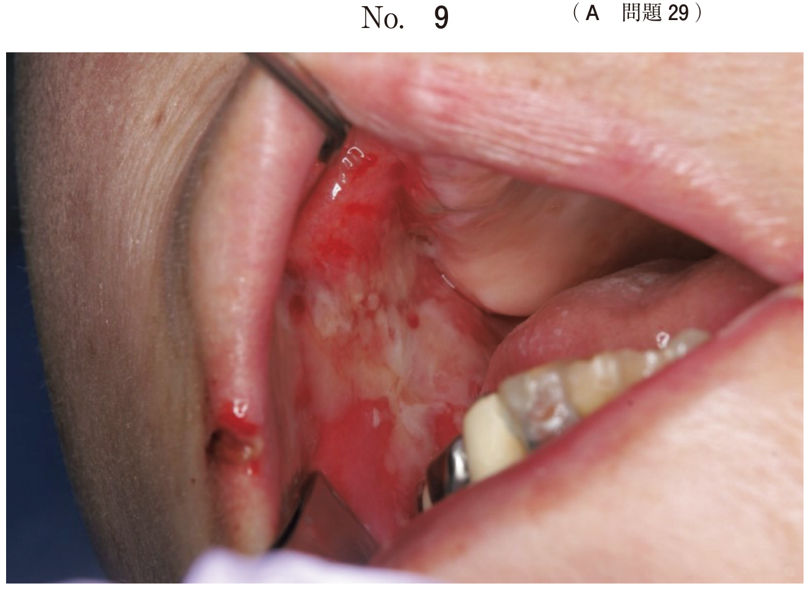

患者が使用中の義歯を観察・評価することは、義歯調整を行ううえで、また新たに義歯を製作する場合においても重要である。
| 診査項目 | 評価内容 |
|---|---|
| 義歯床形態の観察 | 維持・安定・支持に関わる形態、辺縁封鎖の状態 |
| 義歯床粘膜面と顎堤粘膜の適合性 | 適合試験材による適合検査 |
| 人工歯咬合面の観察 | 咬耗の程度、咬合高径の変化 |
| 臼歯部人工歯の排列位置 | 頬舌的位置と安定性への影響 |
| 顔貌の観察 | 咬合高径、顎間関係の評価 |
| 咬合平面の位置と傾き | カンペル平面との平行性 |
| 咬合接触状態の検査 | 咬合紙、シリコーンゴム印象材による検査 |
| 義歯の清掃状態 | デンチャープラーク、歯石沈着 |
不適合な旧義歯の長期使用により、床下粘膜に種々の病変が生じることがある。
| 疾患名 | 原因・特徴 |
|---|---|
| 義歯性線維腫 | 義歯床縁からの慢性刺激により発生。肉芽型と線維型がある |
| 乳頭状過形成 | 口蓋部への慢性刺激。床縁ではなく口蓋部 |
| 疾患名 | 原因・特徴 |
|---|---|
| フラビーガム | 骨の裏打ちのない可動性の厚い顎堤粘膜。不安定な義歯による |
| 義歯性口内炎 | 不衛生な義歯、カンジダ感染など |
肉芽型は義歯の形態修正により治癒することがある。線維型は義歯調整による治癒が期待できないため、外科的な切除が行われる。
旧義歯使用時の咀嚼機能を評価することで、新義歯製作の参考となる。
グルコース溶出量測定では、被験食品（グミゼリー）を咀嚼した後の試料を評価し、溶出量（グルコース濃度）を測定する。
義歯床縁からの刺激が原因となる粘膜疾患はどれか。1つ選べ。
【解説】義歯性線維腫は義歯床縁からの慢性刺激により発生する。口腔扁平苔癬は自己免疫疾患、乳頭状過形成は口蓋部への刺激、フラビーガムは不安定な義歯による顎堤粘膜の病変、口腔カンジダ症は真菌感染である。
咀嚼困難を訴えて受診した患者に対して行ったある検査の過程の写真（別冊No.13）を別に示す。
矢印で示す試料に対する評価指標はどれか。1つ選べ。

【解説】写真はグルコース溶出量測定の過程を示している。グミゼリーを咀嚼した後、試験紙に滴下してグルコース濃度（溶出量）を測定する。篩分法では平均粒径や断片数を評価する。